More room for your words. Calmer surfaces. A dependable Save. Open any screen to inspect it at full size.
27 October 2026 · iPhone 17 / iOS 27.0 Simulator · Invented test dataThese are native test captures, not generated poster mockups. They are development review evidence, not polished marketing screenshots.
Shallower scene; more space for writing
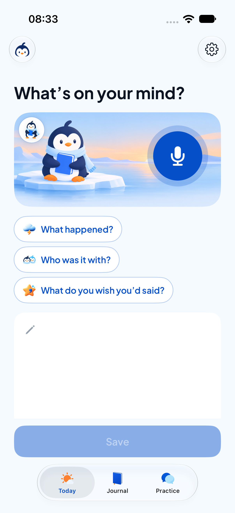
Quieter prompt, one prominent Save
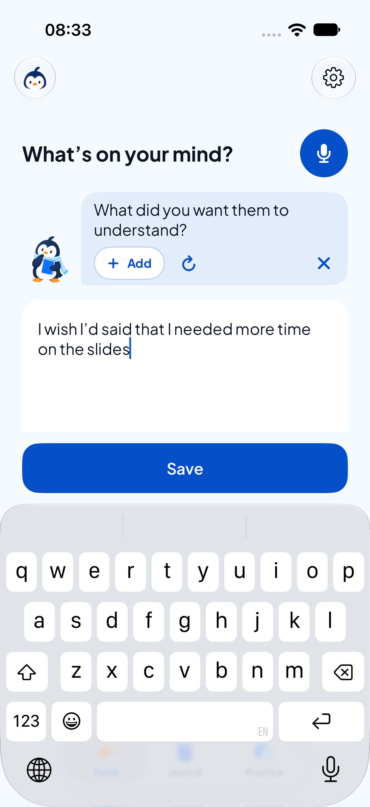
Saved entry and optional reflection
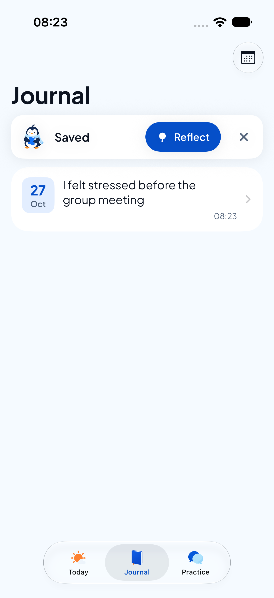
Continuous ice background
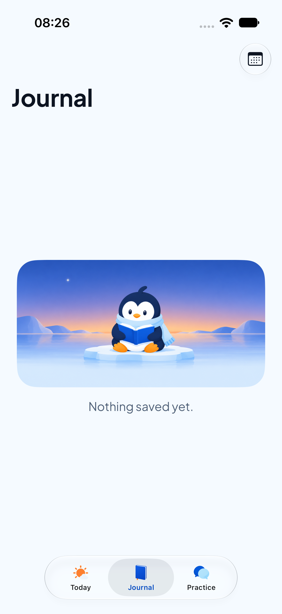
Compact date and readable original words
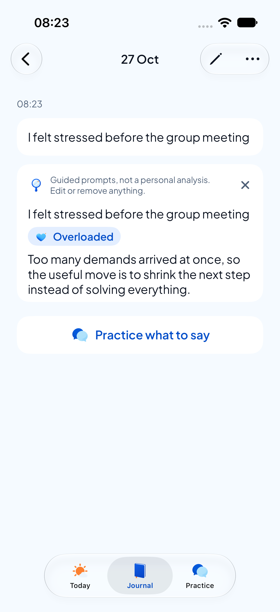
Shared illustrated start card
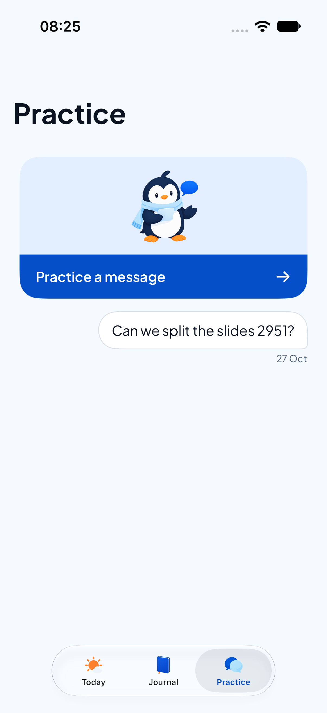
Save stays above the software keyboard
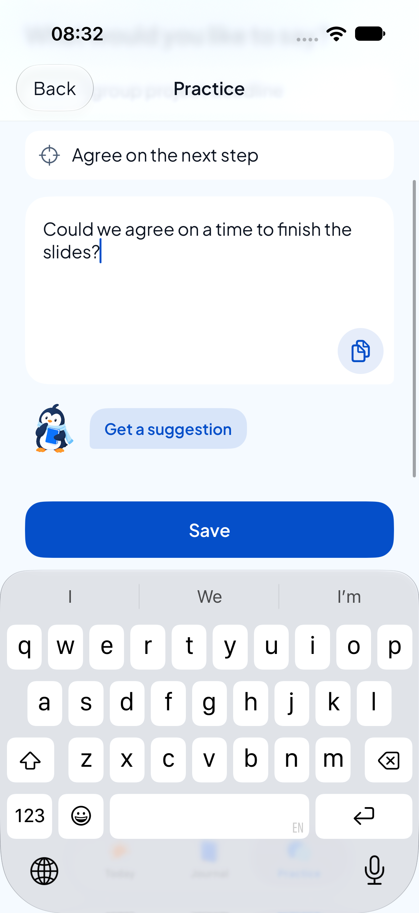
Scrolling content; fixed Save
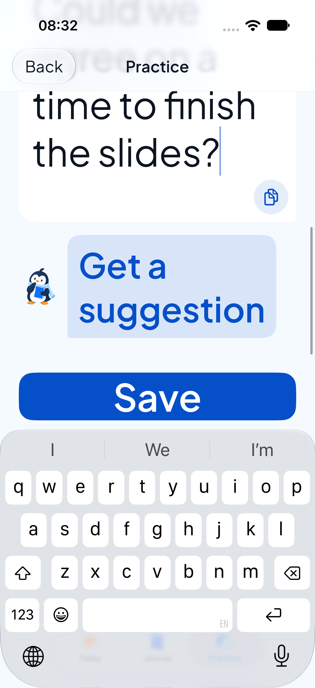
Existing introduction preserved
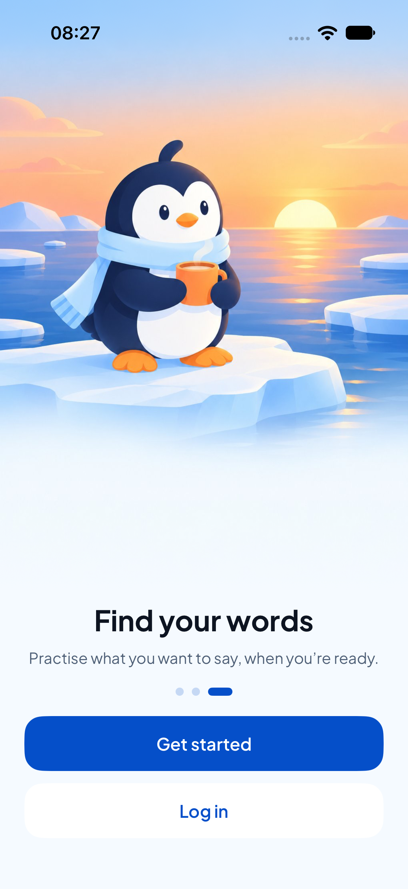
Existing source labels and pinned action
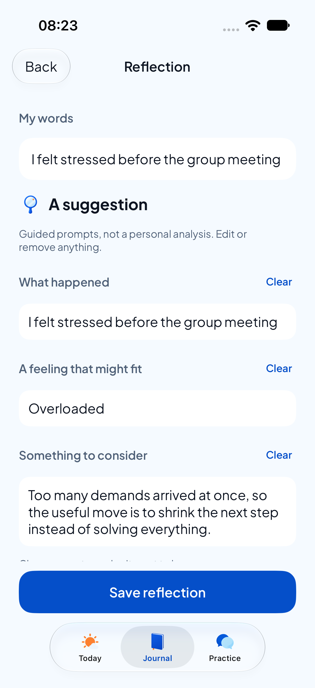
Existing data controls preserved
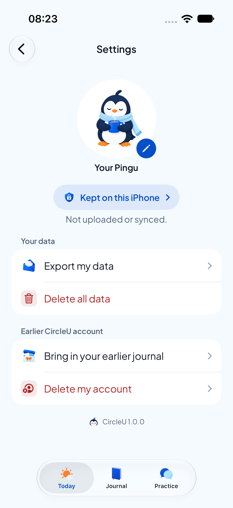
Existing recovery-only route preserved
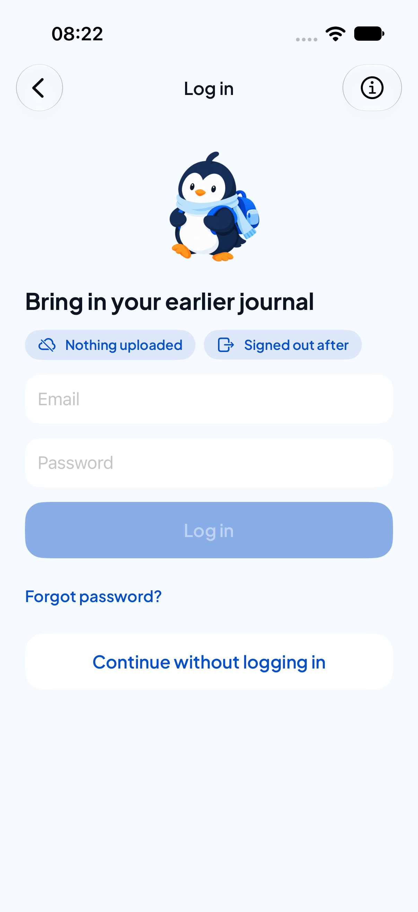